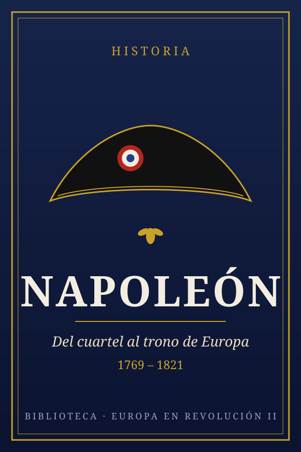

Napoleón
Del cuartel al trono de Europa (1769–1821)
Serie «Europa en revolución» · Libro 2 · Viene de La Revolución francesa · Continúa en Restauración y revoluciones
Llévatelo contigo: PDF 315 KB EPUB 99 KB
Capítulo 1Un niño extranjero en Francia
Napoleón nació el 15 de agosto de 1769 en Ajaccio, en la isla de Córcega. Solo un año antes, la República de Génova había cedido la isla a Francia. Si hubiera nacido un poco antes, habría sido genovés. Su nombre de nacimiento era italiano: Napoleone di Buonaparte. Su lengua materna era el corso, parecido al italiano, y aprendió francés en la escuela. Nunca perdió del todo su acento.
Su familia era de la pequeña nobleza corsa: con título, pero con poco dinero. Su padre, Carlo, consiguió becas del rey para sus hijos. Gracias a una de ellas, con solo nueve años Napoleón fue enviado a la escuela militar de Brienne, en el continente.
Allí fue un niño solitario. Sus compañeros, hijos de nobles franceses ricos, se burlaban de su acento y de su pobreza. Se refugió en los libros, sobre todo de historia antigua (Alejandro Magno, Julio César) y de matemáticas, donde destacaba. Después pasó a la Escuela Militar de París y en 1785, con 16 años, se graduó como subteniente de artillería. Era un arma poco elegante para los nobles, pero muy técnica: había que calcular trayectorias, distancias y ángulos. Esa formación sería una de sus grandes ventajas.
Capítulo 2La Revolución, una escalera para subir
Antes de 1789, un oficial sin grandes contactos como Napoleón habría tenido muy difícil llegar a general: los altos mandos eran para la alta nobleza. La Revolución lo cambió todo. Muchos oficiales nobles huyeron al extranjero y el ejército necesitaba desesperadamente mandos con talento, vinieran de donde vinieran.
Toulon (1793): el primer golpe de suerte
En 1793 el gran puerto de Toulon, en el Mediterráneo, se había rebelado contra la República y lo ocupaban barcos ingleses y españoles. El joven capitán Bonaparte, de 24 años, estudió el terreno y vio la clave: si se tomaban unas colinas que dominaban la bahía, la artillería francesa podría disparar a la flota enemiga y esta tendría que marcharse. Así fue. En diciembre de 1793 Toulon cayó y Napoleón, herido en un muslo por una bayoneta, fue ascendido a general de brigada. Tenía 24 años.
Vendimiario (1795): «una ráfaga de metralla»
Tras la caída de Robespierre, Napoleón pasó unos días en prisión por su amistad con el hermano de Robespierre y después se quedó sin destino. Pero en octubre de 1795 (el mes de Vendimiario del calendario revolucionario) miles de monárquicos armados avanzaron sobre el edificio del gobierno en París. Le encargaron defenderlo. Napoleón colocó cañones en las calles y disparó metralla a bocajarro contra la multitud. La revuelta se deshizo en minutos. Desde entonces fue «el general Vendimiario», el hombre que había salvado a la República.
Josefina
Ese mismo año conoció a Rose de Beauharnais, una viuda criolla nacida en la isla de Martinica, seis años mayor que él, elegante y muy bien relacionada. A su primer marido lo habían guillotinado durante el Terror. Napoleón se enamoró perdidamente, le cambió el nombre a Josefina y se casaron en marzo de 1796. Le escribía cartas apasionadas desde los campos de batalla. Ella, al principio, no le correspondía tanto.
Capítulo 3Italia y Egipto: nace una leyenda
La campaña de Italia (1796–1797)
Dos días después de su boda, Napoleón partió a mandar el ejército de Italia: unos 40.000 soldados mal pagados, hambrientos y con uniformes rotos. Su misión era secundaria: distraer a los austriacos mientras los ejércitos principales atacaban por Alemania. Pero en un año hizo algo asombroso: derrotó una y otra vez a ejércitos más grandes, conquistó el norte de Italia y obligó a Austria a firmar la paz.
- Velocidad. Sus tropas vivían de lo que encontraban en el terreno en lugar de esperar a lentos convoyes de comida. Así marchaban mucho más rápido que sus enemigos.
- Dividir al enemigo. Si se enfrentaba a dos ejércitos, se colocaba entre ambos, atacaba primero a uno con casi todas sus fuerzas y luego se giraba contra el otro. Aunque tuviera menos soldados en total, en cada batalla tenía más.
- Artillería concentrada. Reunía muchos cañones en un solo punto para abrir un hueco en la línea enemiga.
- Moral. Sabía hablar a sus soldados, conocía a muchos por su nombre y compartía sus riesgos.
También sabía construir su propia imagen. Fundó periódicos que contaban sus victorias en Francia y encargó cuadros heroicos, como el de la batalla del puente de Arcole, donde aparece bandera en mano bajo el fuego enemigo. Sus soldados empezaron a llamarle cariñosamente «el pequeño cabo».
Egipto (1798–1799): ciencia y desastre
El gobierno, algo asustado por la fama de Napoleón, aceptó enviarlo lejos: a conquistar Egipto, para amenazar el camino de los británicos hacia la India. Con el ejército viajaron más de 150 científicos, ingenieros y artistas para estudiar el país.
En julio de 1798 venció a los mamelucos en la batalla de las Pirámides. Pero pocos días después, el almirante británico Horatio Nelson destruyó la flota francesa en la bahía de Abukir. El ejército quedó atrapado en Egipto. Napoleón, al enterarse de que en Francia las cosas iban mal, se escapó en secreto en agosto de 1799 y dejó allí a sus soldados.
Capítulo 4El golpe de Brumario
En 1799 el gobierno del Directorio estaba desprestigiado: corrupción, guerra otra vez con media Europa, dinero que no llegaba. Un grupo de políticos, encabezado por el abate Sieyès, quería un gobierno más fuerte y buscaba «una espada», un general popular que los apoyara. Eligieron a Napoleón, pensando que podrían controlarlo.
El 9 y 10 de noviembre de 1799 (18 y 19 de Brumario del año VIII) dieron el golpe. No fue sencillo. Cuando Napoleón entró en la sala de los diputados, lo recibieron a gritos de «¡fuera el dictador!» y lo zarandearon. Salió pálido y confuso. Le salvó su hermano Luciano, que presidía la asamblea: salió ante los soldados, sacó una espada, la apuntó contra el pecho de Napoleón y juró que la clavaría a su propio hermano si algún día atacaba la libertad. Conmovidos, los soldados entraron y desalojaron a los diputados.
Se creó un nuevo gobierno, el Consulado, con tres cónsules. Pero la Constitución daba casi todo el poder al Primer Cónsul: Napoleón. Sieyès se dio cuenta demasiado tarde de que la espada tenía voluntad propia. La nueva Constitución se sometió a plebiscito (una votación de sí o no) y ganó por abrumadora mayoría, aunque hoy sabemos que el hermano de Napoleón, como ministro del Interior, infló los resultados.
Capítulo 5Rehacer Francia: el Código Civil
Muchos historiadores creen que lo más duradero de Napoleón no fueron sus batallas, sino lo que hizo en esos primeros años de paz relativa. Él mismo lo dijo en el exilio:
«Mi verdadera gloria no es haber ganado cuarenta batallas. Waterloo borrará el recuerdo de tantas victorias. Lo que nada borrará, lo que vivirá eternamente, es mi Código Civil.»
El Código Civil (1804)
Antes de la Revolución, Francia tenía cientos de leyes distintas según la región: el norte seguía costumbres de origen germánico y el sur, el derecho romano. Un viajero podía cambiar de sistema legal varias veces en un solo día. Napoleón reunió a los mejores juristas y presidió él mismo muchas de las reuniones. El resultado, publicado en 1804, fue el Código Civil de los franceses, más tarde llamado Código Napoleón: 2.281 artículos claros que regulaban la vida de todos los ciudadanos por igual.
- Igualdad ante la ley: no más leyes distintas para nobles y plebeyos.
- Propiedad: la propiedad privada quedaba protegida como un derecho casi sagrado.
- Herencia: los bienes se reparten a partes iguales entre los hijos, sin que el mayor se lo lleve todo.
- Matrimonio civil y divorcio: el Estado, no la Iglesia, registra nacimientos, bodas y muertes.
Pero también tenía una cara oscura. La mujer casada quedaba bajo la autoridad de su marido: no podía trabajar, firmar contratos ni administrar sus bienes sin su permiso. El artículo 213 decía que el marido debe protección a su mujer, y la mujer, obediencia a su marido.
Mucho más que un código
- Prefectos (1800): un funcionario nombrado desde París en cada departamento. Francia se volvió un Estado muy centralizado, y sigue siéndolo.
- Banco de Francia (1800) y el franco germinal (1803), una moneda tan estable que mantuvo su valor más de un siglo.
- Liceos (1802): institutos públicos para formar a los futuros funcionarios y oficiales, y en 1808 el título de bachillerato.
- La Legión de Honor (1802): una condecoración para premiar el mérito, civil o militar. Sigue siendo la máxima distinción de Francia.
- El Concordato (1801): un acuerdo con el papa que hizo las paces con la Iglesia católica, tras años de enfrentamiento.
La esclavitud y Haití
En 1802 Napoleón restableció la esclavitud en las colonias francesas, que la Revolución había abolido en 1794. Envió un gran ejército a Saint-Domingue, la colonia más rica del mundo, para recuperar el control. Fracasó: los antiguos esclavos, dirigidos por líderes como Toussaint Louverture y Jean-Jacques Dessalines, y la fiebre amarilla destrozaron a las tropas francesas. El 1 de enero de 1804 nació Haití, la primera república fundada por antiguos esclavos.
Ese fracaso tuvo un efecto sorprendente. Sin Saint-Domingue, a Napoleón le interesaba poco el enorme territorio de Luisiana, en Norteamérica. En 1803 se lo vendió a Estados Unidos por 15 millones de dólares. El país casi duplicó su tamaño de golpe.
Capítulo 6Emperador de los franceses
En 1802 Napoleón se hizo nombrar cónsul vitalicio. Tras descubrirse un complot monárquico para asesinarlo, sus partidarios propusieron dar un paso más: convertir su poder en hereditario, para que su muerte no hundiera el país en el caos. El 18 de mayo de 1804 el Senado lo proclamó Emperador de los franceses, y otro plebiscito lo aprobó.
La coronación fue el 2 de diciembre de 1804 en la catedral de Notre-Dame de París. El papa Pío VII viajó desde Roma para asistir. Pero en el momento clave, Napoleón tomó la corona y se la puso él mismo. Después coronó a Josefina. El mensaje era claro: su poder no se lo debía a la Iglesia, sino a sí mismo y al pueblo.
Parece contradictorio: la Revolución había guillotinado a un rey y, diez años después, Francia tenía un emperador. Napoleón creó incluso una nueva nobleza, con títulos de príncipe, duque o conde. Pero había una diferencia: esos títulos se ganaban con servicios al Estado, sobre todo en el ejército, y no por nacimiento. Muchos de sus mariscales eran hijos de artesanos o campesinos. Por ejemplo, Joachim Murat era hijo de un posadero y llegó a rey de Nápoles.
Capítulo 7Austerlitz: la batalla perfecta
Gran Bretaña, Austria y Rusia se aliaron contra el nuevo emperador. Napoleón preparaba en la costa del canal de la Mancha un gran ejército para invadir Inglaterra, pero nunca pudo cruzar. El 21 de octubre de 1805, la flota británica de Nelson destruyó a la flota franco-española en la batalla de Trafalgar, frente a la costa de Cádiz. Nelson murió en el combate, pero Gran Bretaña dominaría los mares durante un siglo. Napoleón ya no podría invadirla nunca.
Así que giró a su ejército, la Grande Armée, hacia el este, y en pocas semanas cruzó Alemania. El 2 de diciembre de 1805, justo un año después de su coronación, se enfrentó a los ejércitos de Austria y Rusia cerca de Austerlitz (hoy Slavkov, en la República Checa). Estaban presentes tres emperadores: Napoleón, el zar Alejandro I de Rusia y el emperador Francisco I de Austria. Por eso se llama también la batalla de los Tres Emperadores.
Los aliados tenían unos 85.000 soldados; Napoleón, unos 73.000. Y les tendió una trampa.
- El cebo. Días antes, Napoleón fingió estar débil y asustado: pidió negociar y abandonó la meseta de Pratzen, la mejor posición del campo de batalla. Además dejó su flanco sur (derecho) con muy pocos soldados. Los aliados mordieron el anzuelo.
- El ataque aliado. Al amanecer, los aliados bajaron de la meseta en masa para atacar ese flanco débil y cortar la retirada francesa hacia Viena. Pero el sur resistió: el mariscal Davout llegó con refuerzos tras marchar unos 110 kilómetros en dos días.
- El golpe. Cuando la meseta quedó casi vacía, las tropas del mariscal Soult, ocultas por la niebla del valle, subieron por sorpresa y la tomaron. El ejército aliado quedó partido en dos, y sus partes fueron derrotadas por separado.
Cuando la niebla se levantó y salió el sol sobre la colina, Napoleón vio que había ganado. El «sol de Austerlitz» se convirtió en leyenda. Los aliados perdieron unos 27.000 hombres entre muertos, heridos y prisioneros; los franceses, unos 9.000. Austria firmó la paz y Rusia se retiró.
Capítulo 8Europa, un negocio familiar
Tras Austerlitz llegaron más victorias: contra Prusia en Jena (1806), contra Rusia en Friedland (1807). En 1806 desapareció el Sacro Imperio Romano Germánico, que había durado unos mil años. En junio de 1807, Napoleón y el zar Alejandro se reunieron sobre una balsa en medio del río Niemen, y en julio firmaron la paz de Tilsit: se repartían Europa en dos zonas de influencia.
Napoleón organizó la Europa conquistada como si fuera una empresa familiar: colocó a sus hermanos como reyes.
En su momento de máximo poder, hacia 1811, el Imperio francés llegaba desde Hamburgo hasta Roma, con 130 departamentos. A su alrededor había reinos satélites gobernados por su familia o aliados obligados, como Prusia y Austria. Solo Gran Bretaña, Portugal, Suecia y Rusia escapaban a su control directo.
Josefina no le había dado hijos, y Napoleón quería un heredero. En 1809 se divorció de ella, aunque siguió queriéndola, y en 1810 se casó con María Luisa, hija del emperador de Austria. En 1811 nació su hijo, Napoleón Francisco, a quien nombró rey de Roma.
Capítulo 9España: la guerra que no pudo ganar
España era aliada de Francia, pero estaba gobernada de forma muy débil por el rey Carlos IV y su valido, Manuel Godoy, y la familia real estaba enfrentada. El príncipe heredero, Fernando, conspiraba contra su propio padre. En 1807 Napoleón obtuvo permiso para que sus tropas cruzaran España para invadir Portugal, aliado de Gran Bretaña. Pero las tropas francesas se fueron quedando en ciudades españolas.
En 1808, un motín en Aranjuez obligó a Carlos IV a abdicar en su hijo, Fernando VII. Napoleón invitó a los dos a Bayona, en Francia, como mediador. Allí los presionó hasta que ambos renunciaron a la corona, y se la dio a su hermano, que pasó a ser José I. Los españoles le pusieron motes como «Pepe Botella», aunque en realidad bebía poco.
El 2 de mayo de 1808
Cuando en Madrid se vio que los franceses se llevaban a los últimos miembros de la familia real, el pueblo se levantó. Hubo combates en las calles contra las tropas del mariscal Murat. Esa noche y la madrugada siguiente, los franceses fusilaron a cientos de madrileños. El pintor Francisco de Goya retrató estos días en dos cuadros famosos, El 2 de mayo y Los fusilamientos del 3 de mayo, que están en el Museo del Prado.
El levantamiento se extendió por todo el país. En julio de 1808, en Bailén (Jaén), un ejército español mandado por el general Castaños obligó a rendirse a unos 18.000 soldados franceses. Era la primera vez que un ejército napoleónico se rendía en campo abierto. Toda Europa se enteró de que los franceses no eran invencibles.
Napoleón vino en persona en otoño de 1808, al frente de sus mejores tropas, y reconquistó Madrid. Pero se marchó pronto a luchar contra Austria, y ya nunca volvió. España se convirtió en una trampa: los franceses controlaban las ciudades, pero no el campo. Además, un ejército británico, mandado por el futuro duque de Wellington, desembarcó en Portugal y luchó junto a españoles y portugueses. Napoleón llamó a esta guerra su «úlcera española»: una herida que no dejaba de sangrar. Llegó a tener allí más de 200.000 soldados a la vez.
Cádiz y «la Pepa»
Mientras tanto, en Cádiz, la única gran ciudad que los franceses nunca lograron tomar, se reunieron las Cortes, los representantes de la nación. El 19 de marzo de 1812, día de San José, aprobaron la primera Constitución española, llamada por eso «la Pepa». Declaraba que la soberanía residía en la nación, separaba los poderes y reconocía derechos. La paradoja es que los españoles luchaban contra Francia usando ideas nacidas en la Revolución francesa.
En 1813, tras la derrota de Vitoria, los franceses abandonaron España. Fernando VII volvió al trono en 1814... y lo primero que hizo fue abolir la Constitución de Cádiz y perseguir a los liberales que la habían escrito.
Capítulo 10Rusia, 1812: la gran catástrofe
El zar Alejandro I dejó de cumplir el Bloqueo Continental: Rusia necesitaba vender su trigo y su madera a Gran Bretaña. Napoleón decidió castigarlo. Reunió el ejército más grande que Europa había visto nunca: más de 600.000 soldados de una veintena de naciones. Menos de la mitad eran franceses; el resto eran alemanes, polacos, italianos, holandeses e incluso españoles y portugueses obligados a luchar.
El 24 de junio de 1812 cruzó el río Niemen. Esperaba una batalla rápida y decisiva, como siempre. Pero los rusos hicieron algo inesperado: se retiraron hacia el interior, quemando cosechas y aldeas a su paso para que los invasores no encontraran comida. Esta táctica se llama tierra quemada.
El 7 de septiembre, cerca de Moscú, los rusos por fin plantaron cara en Borodinó. Fue la batalla más sangrienta de un solo día hasta entonces: unos 70.000 muertos y heridos entre los dos bandos. Napoleón ganó, pero el ejército ruso se retiró en orden. Una semana después entró en Moscú... y la encontró casi vacía. Esa misma noche empezaron los incendios, probablemente provocados por orden del gobernador ruso. Ardió gran parte de la ciudad.
Napoleón esperó en las ruinas más de un mes a que el zar pidiera la paz. El zar nunca respondió. El 19 de octubre, ya tarde, empezó la retirada. Llegaron el frío, el hambre y los ataques constantes de los cosacos. En noviembre, al cruzar el río Berézina por unos puentes improvisados, miles de hombres murieron en el agua helada o fueron capturados.
De los más de 600.000 hombres que entraron en Rusia, solo volvieron unas decenas de miles en condiciones de luchar. Se perdieron también casi todos los caballos, unos 200.000, y con ellos la mayoría de los cañones. Fue el principio del fin.
Capítulo 11Caída, Elba y los Cien Días
Tras el desastre de Rusia, sus enemigos olieron la sangre. Prusia, Rusia, Austria, Suecia y Gran Bretaña se unieron. Napoleón reclutó a toda prisa un nuevo ejército, lleno de jóvenes de 18 años sin experiencia y casi sin caballería. En octubre de 1813 fue derrotado en Leipzig, la llamada batalla de las Naciones, en la que lucharon más de medio millón de soldados. Fue la mayor batalla de la historia de Europa hasta la Primera Guerra Mundial.
En 1814 los aliados invadieron Francia. Napoleón luchó con enorme habilidad y ganó varias batallas pequeñas, pero sus propios mariscales, agotados, le pidieron que se rindiera. El 6 de abril de 1814 abdicó. Lo desterraron a Elba, una pequeña isla del Mediterráneo, frente a Italia, de la que le dejaron ser soberano. El hermano de Luis XVI volvió a París como rey Luis XVIII.
Pero Napoleón se aburría en Elba, y le llegaban noticias de que muchos franceses estaban descontentos con la vuelta de los reyes. El 26 de febrero de 1815 se escapó con unos mil hombres y desembarcó en el sur de Francia. Empezaban los Cien Días.
Capítulo 12Waterloo y Santa Elena
Las potencias europeas declararon a Napoleón «fuera de la ley» y preparaban ejércitos enormes. Napoleón decidió atacar primero, antes de que se juntaran. Fue a Bélgica, donde había dos ejércitos: uno británico y aliado, mandado por Wellington, y otro prusiano, mandado por el viejo mariscal Blücher. Su plan de siempre: separarlos y vencerlos uno a uno.
El 18 de junio de 1815, cerca del pueblo de Waterloo, atacó a Wellington. Todo salió mal:
- Había llovido toda la noche. Napoleón esperó a que el suelo se secara para mover los cañones, y perdió horas preciosas.
- Wellington colocó a sus tropas detrás de una pequeña colina, protegidas de la artillería. Cuando la caballería de Ney cargó, la infantería británica formó en cuadros, bloques de soldados con las bayonetas hacia fuera, contra los que los caballos no podían hacer nada.
- Napoleón había mandado a una parte de su ejército, con el mariscal Grouchy, a perseguir a los prusianos. Grouchy los perdió de vista, y los prusianos llegaron a Waterloo por la tarde.
- Como último recurso, Napoleón lanzó a su Guardia Imperial, sus soldados de élite, que nunca habían retrocedido. Esta vez retrocedieron. Un grito recorrió el ejército: «¡La Guardia retrocede!». Y todo se vino abajo.
Wellington diría después que había sido «la cosa más reñida que hayas visto en tu vida». Napoleón abdicó por segunda vez el 22 de junio. Intentó huir a Estados Unidos, pero el puerto estaba bloqueado por barcos británicos, y se entregó a ellos.
Santa Elena
Esta vez no se arriesgaron. Lo enviaron a Santa Elena, una diminuta isla volcánica en medio del océano Atlántico, a casi 2.000 kilómetros de la costa de África. Vivió allí seis años, en una casa húmeda y vigilado día y noche. Dictó sus memorias a sus acompañantes, cuidando mucho la imagen que dejaría a la historia. Murió el 5 de mayo de 1821, con 51 años, probablemente de un cáncer de estómago, la misma enfermedad que había matado a su padre.
En 1840 el rey de Francia pidió a los británicos sus restos, que volvieron a París entre enormes multitudes. Hoy descansa bajo la cúpula dorada de los Inválidos, en París, dentro de un gran sarcófago de piedra roja.
Capítulo 13Mito, leyenda y legado
¿Era bajito?
Es el mito más famoso sobre él, y es falso. Al morir le midieron 5 pies y 2 pulgadas. Pero eran pies y pulgadas franceses, más largos que los ingleses.
El mito nació de varias cosas: la confusión con las medidas inglesas, su apodo cariñoso de «pequeño cabo» (que era por cariño, no por tamaño) y, sobre todo, la propaganda británica. El caricaturista James Gillray lo dibujaba como un hombrecillo enfurruñado y con rabietas. Además, solía estar rodeado de los soldados de su Guardia, que se elegían por ser especialmente altos.
¿Genio o tirano?
Doscientos años después, Napoleón sigue dividiendo a los historiadores. Estas son las dos caras:
- Lo que construyó: el Código Civil, un Estado moderno y eficaz, escuelas, la idea de que el talento vale más que la cuna. Extendió por Europa el fin del feudalismo y el sistema métrico. Sin quererlo, despertó el nacionalismo en Alemania, Italia y España, y sus conquistas debilitaron a España hasta el punto de facilitar la independencia de casi toda Hispanoamérica.
- Lo que destruyó: sus guerras causaron entre tres y seis millones de muertos. Suprimió la libertad de prensa y las elecciones libres, restableció la esclavitud, sometió a las mujeres a sus maridos y saqueó obras de arte de media Europa para llenar el Louvre.
Quizá lo más justo sea decir que fue el hijo de la Revolución francesa: conservó muchas de sus ideas y las extendió por Europa a golpe de cañón, pero traicionó la más importante, la libertad.
Capítulo 14Fechas clave y resumen
- 15 de agosto de 1769
- Nace en Ajaccio (Córcega).
- Diciembre de 1793
- Toma de Toulon; general con 24 años.
- 1796–1797
- Campaña de Italia.
- 1798–1799
- Expedición a Egipto.
- 9–10 de noviembre de 1799
- Golpe de Brumario: Primer Cónsul.
- 21 de marzo de 1804
- Código Civil.
- 2 de diciembre de 1804
- Coronación como emperador.
- 21 de octubre de 1805
- Derrota naval de Trafalgar.
- 2 de diciembre de 1805
- Victoria de Austerlitz.
- 2 de mayo de 1808
- Levantamiento de Madrid: empieza la Guerra de la Independencia.
- 19 de marzo de 1812
- Constitución de Cádiz.
- Junio–diciembre de 1812
- Campaña de Rusia.
- Octubre de 1813
- Derrota de Leipzig.
- 6 de abril de 1814
- Primera abdicación; exilio en Elba.
- 18 de junio de 1815
- Waterloo.
- 5 de mayo de 1821
- Muere en Santa Elena.
Resumen en seis frases
- Napoleón fue un joven corso pobre que subió gracias a su talento militar y a las oportunidades que abrió la Revolución.
- En 1799 tomó el poder con un golpe de Estado y ofreció orden a una Francia agotada por diez años de caos.
- Creó instituciones que aún existen, como el Código Civil, aunque recortó libertades y restableció la esclavitud.
- Como emperador ganó batallas legendarias, como Austerlitz, y llegó a dominar casi toda Europa con ayuda de su familia.
- La guerra en España, la catástrofe de Rusia en 1812 y la alianza de toda Europa contra él provocaron su caída.
- Tras volver durante los Cien Días, fue derrotado en Waterloo en 1815 y murió desterrado en Santa Elena en 1821.
Para pensar: Napoleón dijo que su verdadera gloria era el Código Civil y no sus cuarenta batallas. ¿Estás de acuerdo? ¿Qué crees que ha influido más en tu vida hoy?
Siguiente libro de la serie: Restauración y revoluciones (1815–1848).